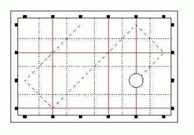

一个直径为1/2的小球，在一个N×m的网格里面运动。
。小球运动的初始方向Xv，Yv∈{-1，0，1）。
在横向和纵向都有一些光线，问f时刻小球会碰到多少次光线。碰到两条光线的交点只计算一次。
询问次数<=10000．n，m<=100000
| F.A.Qs | Home | Discuss | ProblemSet | Status | Ranklist | Contest | 入门OJ | ModifyUser Xeonacid | Logout | 捐赠本站 |
|---|
| F.A.Qs | Home | Discuss | ProblemSet | Status | Ranklist | Contest | 入门OJ | ModifyUser Xeonacid | Logout | 捐赠本站 |
|---|
一个直径为1/2的小球，在一个N×m的网格里面运动。
。小球运动的初始方向Xv，Yv∈{-1，0，1）。
在横向和纵向都有一些光线，问f时刻小球会碰到多少次光线。碰到两条光线的交点只计算一次。
询问次数<=10000．n，m<=100000
The first line of the standard input contains two integers n and m (1<=N,M<=100000) that represent the dimensions of the table. The second line contains an -character word composed of the digits 0 i 1. The -th letter of the word describes the state of the -th horizontal transmitter where 0 means that the transmitter is off and 1 means that it is on. The third line contains an M-character word that describes the state of the vertical transmitters.
The fourth line of the input contains an integer k(1<=K<=10000)): the number of queries. Each of the following K lines contains five integers x,y,Xv,Yv,t(1<x<M,1<y<N,Xv,Yv属于[-1,1],1<=T<=10^9) that describe the initial position, the velocity of the ball and the duration of its movement.
Your program should output exactly k lines to the standard output: the answers to the respective queries. Each answer should have the form of a single integer: the number of times the hit signal was displayed.
